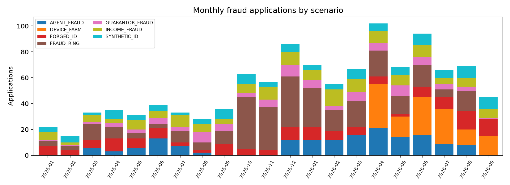
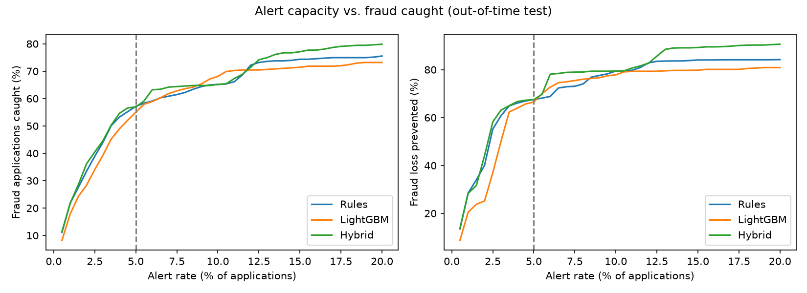
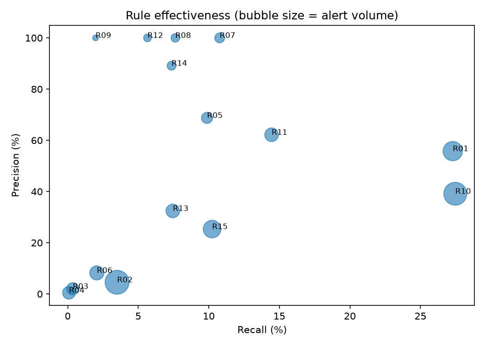
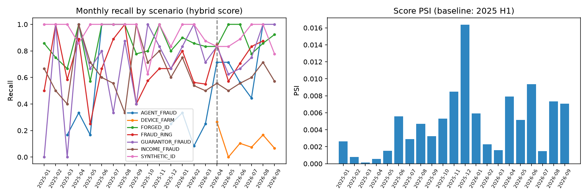

Period: 2025-01-01 to 2026-09-30 · Data: synthetic applications and SIDTD ID images

| Scenario | Applications | Loss (M TRY) |
|---|---|---|
| INCOME_FRAUD | 150 | 233.34 |
| FORGED_ID | 150 | 65.12 |
| FRAUD_RING | 311 | 59.81 |
| SYNTHETIC_ID | 120 | 22.03 |
| DEVICE_FARM | 133 | 5.63 |
| GUARANTOR_FRAUD | 93 | 5.59 |
| AGENT_FRAUD | 157 | 5.41 |
Recall by scenario in the test period (same capacity):
| scenario | frauds | hybrid_recall | rules_recall |
|---|---|---|---|
| AGENT_FRAUD | 84 | 0.595 | 0.214 |
| DEVICE_FARM | 133 | 0.128 | 0.12 |
| FORGED_ID | 58 | 0.879 | 0.879 |
| FRAUD_RING | 93 | 0.72 | 0.72 |
| GUARANTOR_FRAUD | 35 | 0.743 | 0.743 |
| INCOME_FRAUD | 55 | 0.564 | 0.564 |
| SYNTHETIC_ID | 53 | 0.887 | 0.887 |
| method | roc_auc | pr_auc | alert_rate | precision | recall | loss_recall |
|---|---|---|---|---|---|---|
| Rules | 0.838 | 0.493 | 0.05 | 0.492 | 0.571 | 0.676 |
| LightGBM | 0.81 | 0.417 | 0.05 | 0.474 | 0.55 | 0.665 |
| Hybrid | 0.858 | 0.541 | 0.05 | 0.491 | 0.569 | 0.675 |

The threshold is set by analyst capacity. At this alert volume the hybrid score's recall differs from the rules by -0.2 points; over all thresholds it ranks fraud better (PR-AUC 0.541 against 0.493). The model combines signals that stay below every single rule threshold (agent history, income and down-payment ratios), while the rules keep alerts explainable.
| rule_id | alerts | tp | precision | recall | loss_caught_share | unique_tp | fp_per_tp |
|---|---|---|---|---|---|---|---|
| R10_INCOME_OUTLIER | 782 | 306 | 0.391 | 0.275 | 0.698 | 82 | 1.556 |
| R01_DOC_FORGERY_HIGH | 545 | 304 | 0.558 | 0.273 | 0.185 | 106 | 0.793 |
| R11_UNEXPLAINED_DOWN_PAYMENT | 259 | 161 | 0.622 | 0.145 | 0.592 | 6 | 0.609 |
| R07_SHARED_PHONE | 120 | 120 | 1 | 0.108 | 0.062 | 33 | 0 |
| R15_NIGHT_ONLINE | 450 | 114 | 0.253 | 0.102 | 0.04 | 45 | 2.947 |
| R05_TCKN_INVALID | 160 | 110 | 0.688 | 0.099 | 0.072 | 10 | 0.455 |
| R08_SHARED_IBAN | 85 | 85 | 1 | 0.076 | 0.03 | 17 | 0 |
| R13_AGENT_EARLY_CANCEL | 256 | 83 | 0.324 | 0.075 | 0.017 | 58 | 2.084 |
| R14_YOUNG_HIGH_INCOME | 92 | 82 | 0.891 | 0.074 | 0.048 | 4 | 0.122 |
| R12_GUARANTOR_REUSE | 63 | 63 | 1 | 0.057 | 0.008 | 43 | 0 |
| R02_DOC_FORGERY_MEDIUM | 854 | 39 | 0.046 | 0.035 | 0.029 | 11 | 20.897 |
| R06_TCKN_VELOCITY | 280 | 23 | 0.082 | 0.021 | 0.028 | 1 | 11.174 |
| R09_SHARED_ADDRESS | 22 | 22 | 1 | 0.02 | 0.003 | 2 | 0 |
| R03_MRZ_INCONSISTENT | 200 | 4 | 0.02 | 0.004 | 0.001 | 1 | 49 |
| R04_DOC_DATE_LOGIC | 219 | 1 | 0.005 | 0.001 | 0.002 | 0 | 218 |

rule_greedy_order.csv) and should be re-tuned, merged or retired.fp_per_tp should contribute to the score rather than trigger a decline on their own.| metric | value |
|---|---|
| doc_roc_auc | 0.983 |
| doc_pr_auc | 0.974 |
| doc_recall_at_1pct_fpr | 0.841 |
| doc_recall_at_5pct_fpr | 0.912 |
| doc_recall_at_10pct_fpr | 0.953 |
| field_roc_auc | 0.974 |
| field_pr_auc | 0.874 |
| localisation_acc_top_field | 0.912 |
| operating_threshold | 0.328 |
| test_fpr_at_threshold | 0.059 |
| test_recall_at_threshold | 0.922 |
Flag rates of the OCR consistency checks on genuine and forged documents:
| check | evaluated | flag_rate_genuine | flag_rate_forged | precision_in_sample |
|---|---|---|---|---|
| mrz_checkdigit_fail | 46 | 0.167 | 0 | 0 |
| mrz_viz_mismatch | 40 | 0.05 | 0 | 0 |
| date_logic_fail | 392 | 0.023 | 0 | 0 |
Root cause: the model misses edits most often in surname (75%), type (75%), number (83%) (doc_model_by_tampered_field.csv). Recall is 69.7% on Crop_and_Replace and 95.0% on Inpaint_and_Rewrite forgeries. A pasted field comes from another genuine document, so its texture carries little trace; this type needs a cross-check of the field content against the MRZ or a reference database. The OCR checks flag genuine documents more often than forged ones, so they belong on the analyst screen, not in the rule set.
| kri | value | status |
|---|---|---|
| Documents with forgery score >= 0.5 (%) | 5.022 | GREEN |
| Online applications from a device seen with 2+ identities | 14 | AMBER |
| Applications with a shared phone or IBAN | 6 | GREEN |
| Agents with early-cancel rate >= 20% and z > 3 | 3 | RED |
| Score PSI vs. baseline | 0.007 | GREEN |

sql_04_shared_attribute_clusters.csv).| agent_id | branch_id | applications | early_cancel_pct | fpd_pct | month_end_pct | early_cancel_z | vs_branch_peers | confirmed_fraud |
|---|---|---|---|---|---|---|---|---|
| T0116 | S014 | 75 | 50.7 | 0 | 46.7 | 9.63 | 0.438 | 37 |
| T0010 | S015 | 100 | 41 | 7 | 40 | 7.63 | 0.35 | 50 |
| T0062 | S021 | 175 | 29.1 | 1.7 | 37.7 | 5.18 | 0.207 | 53 |
| T0038 | S021 | 170 | 17.1 | 2.4 | 32.4 | 2.69 | 0.086 | 37 |
| T0092 | S009 | 154 | 9.7 | 0 | 18.2 | 1.17 | 0.054 | 3 |
| # | Action | Owner | Expected effect |
|---|---|---|---|
| 1 | Promote candidate rule R16_DEVICE_FARM |
IT Security, Operations | Device-farm recall 12.8% → 82.0% |
| 2 | Re-screen earlier applications when a phone or IBAN becomes shared | Internal Control | Catches the first members of a ring (see case study) |
| 3 | Defer commission for agents with an early-cancellation z-score above 3 until the cancellation window closes | Sales, HR | Stops commission loss from agent fraud |
| 4 | Verify income documents at the source before allocation when the down payment is high relative to income | Underwriting | Cuts loss in the costliest scenario (income fraud) |
| 5 | Re-tune or retire weak rules (R11_UNEXPLAINED_DOWN_PAYMENT, R14_YOUNG_HIGH_INCOME, R09_SHARED_ADDRESS) | Fraud Management | Fewer alerts, higher precision |
| 6 | Require video or in-person identity verification when the document score is high | Operations, Legal | Cuts loss from forged documents |
All figures come from synthetic data; the method and queries apply to real data unchanged.